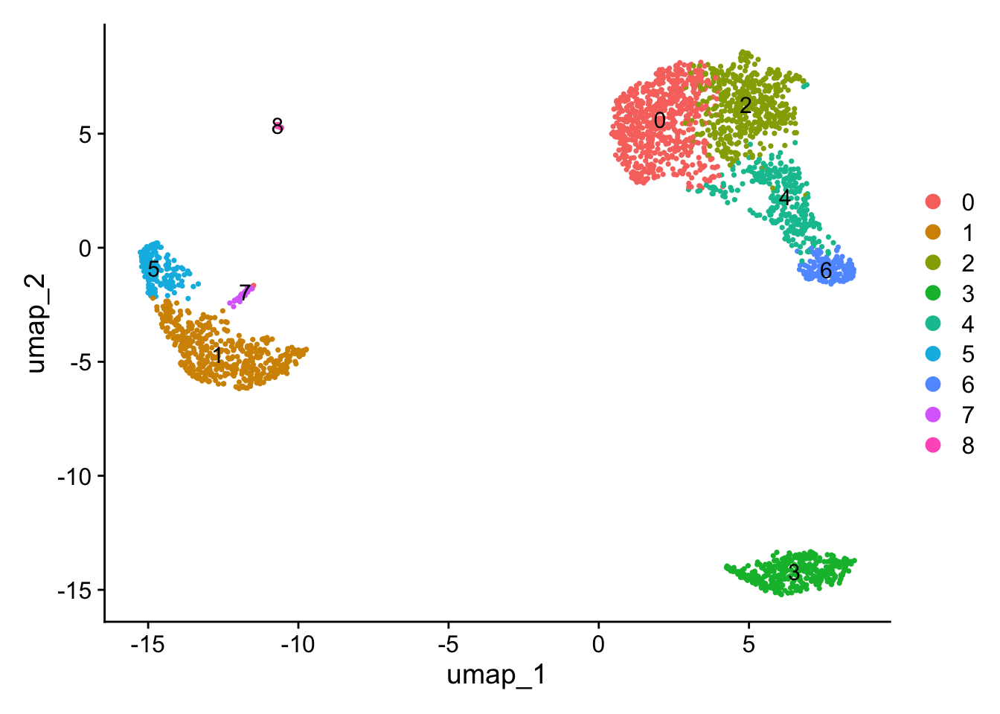

5 R Seurat: Guided Clustering Tutorial
5.1 Uitvoering met voorbeeld data
pbmc.data <- Read10X(data.dir = "seurat_data/ruwe data/filtered_gene_bc_matrices/hg19/")
# Initialize the Seurat object with the raw (non-normalized data).
pbmc <- CreateSeuratObject(counts = pbmc.data, project = "pbmc3k", min.cells = 3, min.features = 200)
pbmc## An object of class Seurat
## 13714 features across 2700 samples within 1 assay
## Active assay: RNA (13714 features, 0 variable features)
## 1 layer present: counts## 3 x 30 sparse Matrix of class "dgCMatrix"##
## CD3D 4 . 10 . . 1 2 3 1 . . 2 7 1 . . 1 3 . 2 3 . . . . . 3 4 1 5
## TCL1A . . . . . . . . 1 . . . . . . . . . . . . 1 . . . . . . . .
## MS4A1 . 6 . . . . . . 1 1 1 . . . . . . . . . 36 1 2 . . 2 . . . .
De . waardes in de matrix vertegenwoordigen 0 waardes, oftewel geen moleculen gedetecteerd.
5.1.1 Pre-processing workflow
Met pre-processing worden de cellen met een lage kwaliteit eruit gefilterd. nFeature is het aantal genen en nCount is het aantal moleculen. Een cel met een lage kwaliteit heeft een laag aantal genen en/of moleculen.
# % MT reads
pbmc[["percent.mt"]] <- PercentageFeatureSet(pbmc, pattern = "^MT-")
# Visualize QC metrics as a violin plot
VlnPlot(pbmc, features = c("nFeature_RNA", "nCount_RNA", "percent.mt"), ncol = 3)
# Feature scatter
plot1 <- FeatureScatter(pbmc, feature1 = "nCount_RNA", feature2 = "percent.mt")
plot2 <- FeatureScatter(pbmc, feature1 = "nCount_RNA", feature2 = "nFeature_RNA") + geom_smooth(method = 'lm')
plot1 + plot2
# Filtering of cells
pbmc <- subset(pbmc, subset = nFeature_RNA > 200 & nFeature_RNA < 2500 & percent.mt < 5)
# Normalizing the data
pbmc <- NormalizeData(pbmc)
Met PercentageFeatureSet kan het percentage van alle counts die bij een bepaald gen van de cel horen berekend worden. Met de bovenstaande code wordt het percentage van reads/counts berekend die behoren tot het mitochondriaal genoom. Met pattern = "^MT-" wordt er gezocht naar alle genen die starten met MT.
VlnPlot maakt een violin plot van single cell data. Met features wordt aangegeven welk kenmerk geplot moet worden.
FeatureScatter maakt een scatterplot van twee kenmerken (features), de cellen zijn gekleurd op basis van hun identiteits klasse. De pearson correlation tussen de twee kenmerken is boven aan het plot weergeven.
Op basis van de visualisatie worden de cellen gefilterd die een unique feature counts over 2500 of minder dan 200 hebben en die meer dan 5% mitochondrial counts hebben.
5.1.2 Identification of highly variable features
In dit deel wordt er een deel van de kenmerken verzameld welk een hoge cell-to-cell variatie hebben in de dataset, dit houdt in dat ze hoog tot expressie komen in sommige cellen en laag in andere cellen.
pbmc <- FindVariableFeatures(pbmc, selection.method = "vst", nfeatures = 2000)
# Identify the 10 most highly variable genes
top10 <- head(VariableFeatures(pbmc), 10)
# plot variable features with and without labels
plot1 <- VariableFeaturePlot(pbmc)
plot2 <- LabelPoints(plot = plot1, points = top10, repel = TRUE)
plot1 + plot2
FindVariableFeatures identificeerd kenmerken die outliers zijn op een mean variability plot. Met selection.method geef je aan hoe de top variabelen kenmerken gekozen moeten worden. “vst” zet eerst een lijn op van de relatie tussen de log(variance) en de log(mean) en standaardiseerd de feature values door gebruik te maken van het waargenomen gemiddelde en de verwachte variance.
5.1.3 Perform linear dimensional reduction
## Centering and scaling data matrixDe ScaleData functie verschuift de expressie van elk gen, zodat de gemiddelde expressie over de cellen 0 is en schaalt de expressie van elk gen, zodat de variantie tussen cellen 1 is.
# Perform a PCA dimensionality reduction
pbmc <- RunPCA(pbmc, features = VariableFeatures(object = pbmc))
# Visualizing the PCA
VizDimLoadings(pbmc, dims = 1:2, reduction = "pca")


RunPCA levert een lijst met genen met de meest positieve en negatieve ladingen, die modules van genen vertegenwoordigen die correlatie of anticorrelatie vertonen tussen afzonderlijke cellen in de dataset. Een positieve lading betekent dat het gen positief correleert met het component, oftewel, een hogere expressie van dit gen draagt bij aan een hogere waarde van het component. Een negatieve lading houdt in dat een hogere expressie van dit gen bijdraagt aan een lagere waarde van die component.
De DimHeatmap functie visualiseert de genen die het meest bijdragen aan de gekozen principal component (PC). De rijen vertegenwoordigen de genen die bijdrage aan de eerste dimensie (PC1), de kolommen vertegenwoordigen de 500 cellen (cells = 500) en de kleurintensiteit in de heatmap geeft de bijdrage van een gen aan de eerste dimensie van de dimensionale reductie aan. Als bepaalde genen felgekleurde vakjes hebben, betekent dit dat deze genen sterk bijdragen aan de variatie in de data die door de eerste dimensie wordt vastgelegd. Het argument balance = TRUE zorgt ervoor dat de kleurintensiteit over de heatmap gebalanceerd wordt.
5.1.3.1 Determine the dimensionality of the dataset

Het doel van de ElbowPlot functie is om te bepalen hoeveel principal components je moet behouden. Het identificeert het punt waar het toevoegen van meer componenten niet veel extra variatie verklaart. De elbow is het punt waar de verklaarde variatie sterk begint af te nemen en de curve begint af te vlakken. In het bovenstaande voorbeeld is de elbow zichtbaar rond PC9-10, wat erop wijst dat het merendeel van het echte signaal wordt opgevangen op de eerste tien pc’s.
5.1.4 Cluster the cells & UMAP
## Modularity Optimizer version 1.3.0 by Ludo Waltman and Nees Jan van Eck
##
## Number of nodes: 2638
## Number of edges: 95927
##
## Running Louvain algorithm...
## Maximum modularity in 10 random starts: 0.8728
## Number of communities: 9
## Elapsed time: 0 seconds
De FindNeighbors functie berekent de afstanden tussen cellen in de lagere dimensionale ruimte (zoals PCA). Dit wordt uitgevoerd op de eerste 10 PC’s zoals bepaald met de ElbowPlot.
De FindClusters functie wordt gebruikt om cellen te groeperen in clustergroepen op basis van hun genexpressieprofielen.
5.1.5 Finding differentially expressed features
## For a (much!) faster implementation of the Wilcoxon Rank Sum Test,
## (default method for FindMarkers) please install the presto package
## --------------------------------------------
## install.packages('devtools')
## devtools::install_github('immunogenomics/presto')
## --------------------------------------------
## After installation of presto, Seurat will automatically use the more
## efficient implementation (no further action necessary).
## This message will be shown once per session## p_val avg_log2FC pct.1 pct.2 p_val_adj
## IL32 2.892340e-90 1.3070772 0.947 0.465 3.966555e-86
## LTB 1.060121e-86 1.3312674 0.981 0.643 1.453850e-82
## CD3D 8.794641e-71 1.0597620 0.922 0.432 1.206097e-66
## IL7R 3.516098e-68 1.4377848 0.750 0.326 4.821977e-64
## LDHB 1.642480e-67 0.9911924 0.954 0.614 2.252497e-63## p_val avg_log2FC pct.1 pct.2 p_val_adj
## FCGR3A 8.246578e-205 6.794969 0.975 0.040 1.130936e-200
## IFITM3 1.677613e-195 6.192558 0.975 0.049 2.300678e-191
## CFD 2.401156e-193 6.015172 0.938 0.038 3.292945e-189
## CD68 2.900384e-191 5.530330 0.926 0.035 3.977587e-187
## RP11-290F20.3 2.513244e-186 6.297999 0.840 0.017 3.446663e-182## Calculating cluster 0## Calculating cluster 1## Calculating cluster 2## Calculating cluster 3## Calculating cluster 4## Calculating cluster 5## Calculating cluster 6## Calculating cluster 7## Calculating cluster 8## # A tibble: 7,019 × 7
## # Groups: cluster [9]
## p_val avg_log2FC pct.1 pct.2 p_val_adj cluster gene
## <dbl> <dbl> <dbl> <dbl> <dbl> <fct> <chr>
## 1 3.75e-112 1.21 0.912 0.592 5.14e-108 0 LDHB
## 2 9.57e- 88 2.40 0.447 0.108 1.31e- 83 0 CCR7
## 3 1.15e- 76 1.06 0.845 0.406 1.58e- 72 0 CD3D
## 4 1.12e- 54 1.04 0.731 0.4 1.54e- 50 0 CD3E
## 5 1.35e- 51 2.14 0.342 0.103 1.86e- 47 0 LEF1
## 6 1.94e- 47 1.20 0.629 0.359 2.66e- 43 0 NOSIP
## 7 2.81e- 44 1.53 0.443 0.185 3.85e- 40 0 PIK3IP1
## 8 6.27e- 43 1.99 0.33 0.112 8.60e- 39 0 PRKCQ-AS1
## 9 1.16e- 40 2.70 0.2 0.04 1.59e- 36 0 FHIT
## 10 1.34e- 34 1.96 0.268 0.087 1.84e- 30 0 MAL
## # ℹ 7,009 more rows
# you can plot raw counts as well
VlnPlot(pbmc, features = c("NKG7", "PF4"), slot = "counts", log = TRUE)## Warning: The `slot` argument of `VlnPlot()` is deprecated as of
## Seurat 5.0.0.
## ℹ Please use the `layer` argument instead.
## This warning is displayed once every 8 hours.
## Call `lifecycle::last_lifecycle_warnings()` to see where
## this warning was generated.
FeaturePlot(pbmc, features = c("MS4A1", "GNLY", "CD3E", "CD14", "FCER1A", "FCGR3A", "LYZ", "PPBP",
"CD8A"))
pbmc.markers %>%
group_by(cluster) %>%
dplyr::filter(avg_log2FC > 1) %>%
slice_head(n = 10) %>%
ungroup() -> top10
DoHeatmap(pbmc, features = top10$gene) + NoLegend()
De code VlnPlot(pbmc, features = c("MS4A1", "CD79A")) genereert een violin plot die laat zien hoe de genexpressie van “MS4A1” en “CD79A” varieert over de cellen in pbmc. Met slot = "counts" geeft aan dat de ruwe telwaardes worden gebruikt voor de visualisatie.
FeaturePlot kleurt single cellen in een dimensional reduction plot volgens een feature (kenmerk), in dit geval volgens de gen naam.
Met de DoHeatmap functie en de voorgaande filter worden de top 10 genen per cluster weergeven. De balk helemaal bovenaan weergeeft het cluster nummer, welk ook terug te zien zijn in de UMAP.
5.1.6 Assigning cell type identity to clusters
new.cluster.ids <- c("Naive CD4 T", "CD14+ Mono", "Memory CD4 T", "B", "CD8 T", "FCGR3A+ Mono",
"NK", "DC", "Platelet")
names(new.cluster.ids) <- levels(pbmc)
pbmc <- RenameIdents(pbmc, new.cluster.ids)
DimPlot(pbmc, reduction = "umap", label = TRUE, pt.size = 0.5) + NoLegend()
plot <- DimPlot(pbmc, reduction = "umap", label = TRUE, label.size = 4.5) + xlab("UMAP 1") + ylab("UMAP 2") +
theme(axis.title = element_text(size = 14), legend.text = element_text(size = 10)) + guides(colour = guide_legend(override.aes = list(size = 6)))
plot
5.2 Uitvoering met CSF1R-related disorder
Bij CSF1R-RD is er sprake van mutaties in de colony-stimulating factor-1 receptor CSF1R gen (microglia) die voornamelijk een effect hebben op de witte stof van het brein. CSF1R is essentieel voor de proliferatie, fagocytose, motiliteit en overleving van microglia. Met single nucleaire RNA-sequencing (snRNAseq) zijn twee microglia celtoestanden geïdentificeerd die geassocieerd worden met de CSF1R-RD, dit zijn de lipid-laden en de inflammatory toestanden.
De verkregen data set bevat de resultaten van de snRNAseq van de microglia.
# Pad naar rds file
ad_file <- "../../Downloads/f9bca543-f82a-4863-bd62-b270b634ea10.rds"
# Inlezen van het bestand naar een Seurat object
alzheimer <- readRDS(ad_file)
# Kijk tot welke class object alzheimer behoort
class(alzheimer)## [1] "Seurat"
## attr(,"package")
## [1] "SeuratObject"Na het inlezen met readRDS is het bestand al een seurat object, de CreateSeuratObject functie hoeft daarom niet meer toegepast te worden.
5.2.1 Pre-processing workflow
# Visualiseer QC metrics als een violin plot
VlnPlot(alzheimer, features = c("nFeaturess_RNA", "nCounts_RNA", "pct_counts_mt"), ncol = 3)
# Feature scatter
plot1 <- FeatureScatter(alzheimer, feature1 = "nCounts_RNA", feature2 = "pct_counts_mt")
plot2 <- FeatureScatter(alzheimer, feature1 = "nCounts_RNA", feature2 = "nFeaturess_RNA") + geom_smooth(method = 'lm' )
plot1 + plot2
alzheimer <- subset(alzheimer, subset = nFeaturess_RNA > 200 & nFeaturess_RNA < 3500 & pct_counts_mt < 5)
# Normaliseer de data
alzheimer <- NormalizeData(alzheimer)
Het Seurat object bevat al een pct_counts_mt dus dit hoeft niet meer berekend te worden met PercentageFeatureSet.
Het object is gefilterd voor nFeaturess boven de 200 en onder de 3500, dit omdat bij 3500 ongeveer de stippen niet meer langs de lijn gaan.
5.2.2 Identification of highly variable features
alzheimer <- FindVariableFeatures(alzheimer, selection.method = "vst", nfeatures = 2000)
# Identificeer de 10 meest highly variable genes
top10 <- head(VariableFeatures(alzheimer), 10)
# plot variable features met labels
plot1 <- VariableFeaturePlot(alzheimer)
plot2 <- LabelPoints(plot = plot1, points = top10, repel = TRUE)
plot2
In het bovenstaande plot staan de genen aangegeven die de hoogste variatie hebben, de genen zijn aangegeven met hun Ensembl ID.
5.2.3 Perform linear dimensional reduction
## Centering and scaling data matrix
De ScaleData functie verschuift de expressie van elk gen, zodat de gemiddelde expressie over de cellen 0 is en schaalt de expressie van elk gen, zodat de variantie tussen cellen 1 is.
# Voer een PCA dimensionality reduction uit
alzheimer <- RunPCA(alzheimer, features = VariableFeatures(object = alzheimer))
# Visualiseer the PCA
VizDimLoadings(alzheimer, dims = 1:2, reduction = "pca")


5.2.3.1 Determine the dimensionality of the dataset

Met ndims kan het aantal dimensions die geplot worden voor standaarddeviatie worden bepaald. Aangezien de Elbow voorbij 20 zat, kan niet de default gebruikt worden die 20 demensions weergeeft en vandaar is het naar 30 gezet. De elbow zit ongeveer bij 22.
5.2.4 Cluster the cells & UMAP
alzheimer <- FindNeighbors(alzheimer, dims = 1:20)
alzheimer <- FindClusters(alzheimer, resolution = 0.5)## Modularity Optimizer version 1.3.0 by Ludo Waltman and Nees Jan van Eck
##
## Number of nodes: 1427
## Number of edges: 54379
##
## Running Louvain algorithm...
## Maximum modularity in 10 random starts: 0.8777
## Number of communities: 7
## Elapsed time: 0 seconds
5.2.5 Finding differentially expressed features
# vind markers voor elk cluster in vergelijking met alle overige cellen, reporteer alleen de positieve
alzheimer.markers <- FindAllMarkers(alzheimer, only.pos = TRUE)
alzheimer.markers %>%
group_by(cluster) %>%
dplyr::filter(avg_log2FC > 1)## # A tibble: 7,780 × 7
## # Groups: cluster [7]
## p_val avg_log2FC pct.1 pct.2 p_val_adj cluster gene
## <dbl> <dbl> <dbl> <dbl> <dbl> <fct> <chr>
## 1 3.33e-62 3.15 0.463 0.083 2.05e-57 0 ENSG00000249867
## 2 1.07e-53 2.57 0.593 0.215 6.55e-49 0 ENSG00000146090
## 3 2.26e-45 1.80 0.739 0.481 1.39e-40 0 ENSG00000067798
## 4 2.85e-45 1.29 0.893 0.79 1.75e-40 0 ENSG00000073849
## 5 1.64e-41 2.15 0.665 0.393 1.01e-36 0 ENSG00000101463
## 6 1.67e-37 3.40 0.27 0.041 1.02e-32 0 ENSG00000273409
## 7 7.50e-37 3.80 0.326 0.074 4.61e-32 0 ENSG00000198010
## 8 9.69e-36 1.45 0.757 0.473 5.96e-31 0 ENSG00000184005
## 9 3.25e-34 5.21 0.178 0.012 2.00e-29 0 ENSG00000182836
## 10 1.30e-30 1.05 0.84 0.717 7.99e-26 0 ENSG00000149177
## # ℹ 7,770 more rowsVlnPlot(alzheimer, features = c("ENSG00000073849", "ENSG00000170677", "ENSG00000146090", "ENSG00000136235", "ENSG00000111913"))
# you can plot raw counts as well
VlnPlot(alzheimer, features = c("ENSG00000073849", "ENSG00000170677"), layer = "counts", log = TRUE)
FeaturePlot(alzheimer, features = c("ENSG00000073849", "ENSG00000170677", "ENSG00000146090", "ENSG00000136235", "ENSG00000111913"))
alzheimer.markers %>%
group_by(cluster) %>%
dplyr::filter(avg_log2FC > 1) %>%
slice_head(n = 5) %>%
ungroup() -> top5
DoHeatmap(alzheimer, features = top5$gene) + NoLegend()
De code VlnPlot(pbmc, features = c()) genereert een violin plot die laat zien hoe de genexpressie van “ENSG00000073849”, “ENSG00000170677”, “ENSG00000146090”, “ENSG00000136235” en “ENSG00000111913” variëren over de cellen in alzheimer. Zoals je kan zien is ENSG0000073849 in alle clusters aanwezig. ENSG000000136235 komt voornamelijk in cluster 1 tot expressie en ENSG00000111913 komt voornamelijk in cluster 5 tot expressie, dit komt overeen met de heatmap.
Met layer = "counts" geeft aan dat de ruwe telwaardes worden gebruikt voor de visualisatie.
FeaturePlot kleurt single cellen in een dimensional reduction plot volgens een feature (kenmerk), in dit geval volgens de gen naam.
Met de DoHeatmap functie en de voorgaande filter worden de top 5 genen per cluster weergeven. De balk helemaal bovenaan weergeeft het cluster nummer, welk ook terug te zien zijn in de UMAP.
5.3 Links
Seurat tutorial: click here for the link Dataset Alzheimer: click here for the link Artikel: click here for the link Youtube tutorial analysis: click here for the link